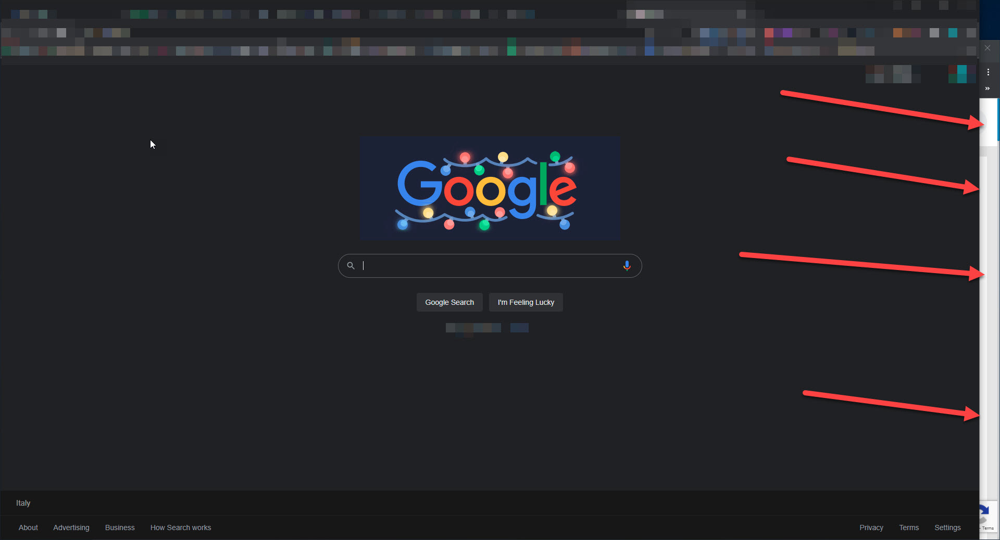

To simulate human clicks, we always need some random, so you choose 2 numbers and then a random number in that range will be used for each click.
Important: if you invite too fast FB can ban the use of Invites for 24 hours. Min value should be at least 2 sec. Default timeouts are good, but if you were limited for 1 day - you have to increase the timeout to 3+ sec. And do not use Facebook at the same time you run the script!
Scroll times the post likers list before starting inviting (in case you are limited too often, try this feature).
Additional delay seconds between scrolls.
Important - how to continue your work while script is working
Browser may stop any extension if the page is not visible on the screen. So we can't scroll and click if the page is in the background completely. Just leave it on the second monitor or open another window for 95% of your screen, click here to see/hide the example NEW! By default we scan likes in 'All' tab (where you can see all reactions together) but you may want scan them separately by tab (this feature breaks when facebook updates icons of reactions and we fix it with new update):
For invite Friends (or page followers to the group): skip first friends in the list and don't select them (may be useful when some users can't be invited due to some bug).
If you put too many likes you will need to solve the captcha, so you can limit likes here (for a single run): . It uses same timeouts as for Invites.
By default, script checks if the commentator is the same person who posted a post. If not, it tries to change the commentator if that is possible, otherwise it skips it. If you enable this option - script will just post a comment without checking who is posting: you or the page.
Do not post comments with my private accounts, which is (full name as it is in Facebook, comma separated):
To comment all shared posts automatically write text (min. 5 characters):
Pause after each comment from to seconds.
Limit comments posted for each run (if you comment too much captcha can be shown):
Skip shared posts for next people (for example your own name, comma separated):
Facebook sets personal limits to every person. Usually, you have 500 invite limit for a day or some hours, then it changes, depends on how much invites were accepted and how many you've sent in a week/month. So here you can set a limit after which the extension will be stopped automatically. Once you reach the limit - try again in 3-4 hours. You can also use second profile that manage the page to invite more on the same day.
Limit for single run:Facebook doesn't like if we click too many "show more" buttons (or scroll too many times the list), so it's better to not click more than 200 per post (manually you arrive max to 50 clicks). Do not click (scroll) more than times per post.
Do you want to skip some posts? Open Publishing Tools tab, there are 25 posts per page. Open the page you need and start the extension there. Do you still need to skip some posts on that page? Put the number here (it is saved just for 1 run) (1-24 or any number if you run the script in Photos tab)
Business Suite scanning update (Oct 2021): when we scan in business suite, some pages can't open the post in the current tab (Facebook error) and we scan them by default in a new tab which may not work for you. If you can open list of likers in the current tab - just enable this setting: